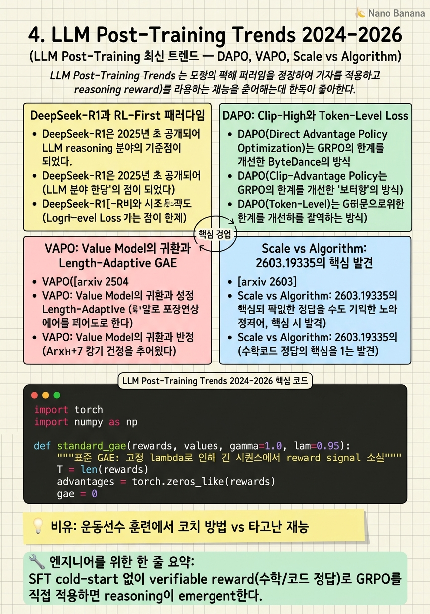

LLM Post-Training Trends 2024-2026

🎯 학습 목표
- DeepSeek-R1의 훈련 레시피와 GRPO를 사용한 이유를 설명할 수 있다
- DAPO가 GRPO의 어떤 문제를 해결하는지 설명할 수 있다
- VAPO의 value model과 Length-Adaptive GAE의 역할을 수식으로 설명할 수 있다
- Scale vs Algorithm 연구의 핵심 발견을 인터뷰에서 활용할 수 있다
- Gradient effective rank를 데이터 품질 지표로 활용하는 방법을 설명할 수 있다
2024년 DeepSeek-R1의 등장은 LLM post-training 분야에 지각변동을 일으켰다. Chain-of-thought reasoning을 GRPO 기반 RL로 직접 훈련하는 것이 가능함을 보여주며, SFT→RLHF 파이프라인의 대안으로 RL-first 접근이 주목받기 시작했다. 2025년에는 DAPO, VAPO 등 더 정교한 변형들이 등장했다.
2026년 3월에는 획기적인 연구([arxiv 2603.19335](https://arxiv.org/pdf/2603.19335))가 발표되었다. 약 240회의 통제된 실험을 통해 알고리즘 선택이 성능에 미치는 영향이 ~1pp에 불과하고, 모델 스케일이 ~50pp를 결정한다는 것을 실증했다. 이는 '더 나은 알고리즘'보다 '더 큰 모델'이 실질적으로 중요하다는 것을 의미한다.
이 시기 또 다른 중요한 발전은 데이터 품질의 정량화다. Gradient effective rank([arxiv 2504.10766](https://arxiv.org/html/2504.10766v1))는 reasoning 데이터(rank ~361)가 instruction-following 데이터(rank ~153)보다 훨씬 풍부한 gradient 구조를 만든다는 것을 SVD 기반으로 측정했다.
핵심 내용
DeepSeek-R1과 RL-First 패러다임
DeepSeek-R1은 2025년 초 공개되어 LLM reasoning 분야의 기준점이 되었다. 핵심 훈련 레시피는 대규모 SFT 없이 GRPO 기반 RL로 reasoning 능력을 직접 훈련하는 것이다.
기존 패러다임은 '좋은 SFT 데이터를 모으고 → SFT → RLHF'였다. DeepSeek-R1은 '검증 가능한 math/code 문제로 GRPO를 직접 적용'하면 CoT reasoning이 자연적으로 emergent한다는 것을 보여줬다. Long CoT 생성, self-reflection, verification step 등이 reward를 최대화하는 과정에서 자발적으로 나타났다.
모델이 '어, 이 방법은 틀렸네, 다시 생각해보자'라는 형태의 reflection을 RL reward 신호만으로 학습했다는 점이 특히 주목받았다. 이는 이전에 SFT cold start가 필요하다고 생각했던 복잡한 reasoning 패턴이 RL만으로 학습 가능함을 시사한다.
DAPO: Clip-High와 Token-Level Loss
DAPO(Direct Advantage Policy Optimization)는 GRPO의 한계를 개선한 ByteDance의 방법이다. 두 가지 핵심 혁신을 포함한다.
Clip-High 전략: 표준 PPO/GRPO는 비율 \(\rho\)를 \([1-\epsilon, 1+\epsilon]\)으로 대칭 클리핑한다. DAPO는 비대칭 클리핑을 사용한다: \(\rho < 1-\epsilon\)일 때는 낮은 항목을 유지하지만, \(\rho > 1+\epsilon_{high}\)일 때 더 넓은 범위를 허용한다. 이는 좋은 응답에 대한 강한 학습 신호를 보존하면서 나쁜 응답에 대한 급격한 penalty를 방지한다.
Token-Level Policy Gradient Loss: GRPO의 시퀀스 레벨 advantage 대신 각 토큰의 contribution을 더 세밀하게 추정한다. 이는 긴 시퀀스에서 특히 중요한데, 뒷부분 토큰의 reward attribution이 더 정확해진다.
DAP0는 DeepSeek-R1-Zero 계열을 능가하는 성능을 여러 수학 벤치마크에서 보여줬으며, 이후 VAPO 개발의 기반이 되었다.
VAPO: Value Model의 귀환과 Length-Adaptive GAE
VAPO([arxiv 2504.05118](https://arxiv.org/html/2504.05118v1))는 ByteDance가 2025년 4월에 발표한 방법으로, value model을 다시 도입하는 것이 복잡한 reasoning에 필수적임을 논증한다.
GRPO와 DAPO는 value model 없이 group advantage로 credit assignment를 한다. VAPO의 비판: 긴 reasoning chain에서 어떤 step이 최종 결과에 기여했는지 scalar reward만으로는 판단할 수 없다. Value model은 각 step 이후의 expected return을 예측하여 step-level credit assignment를 가능하게 한다.
Length-Adaptive GAE: 표준 GAE의 문제는 discount factor \(\lambda^{T-t}\)가 긴 시퀀스에서 reward signal을 거의 0으로 만든다는 것이다. VAPO는 시퀀스 길이에 적응하는 \(\lambda\)를 제안한다:
\[\lambda_{policy} = 1 - \frac{1}{\alpha \cdot l}\]
여기서 \(\alpha = 0.05\), \(l\)은 시퀀스 길이. 긴 시퀀스(\(l\)이 클수록)에서 \(\lambda\)가 1에 가까워져 reward signal decay를 방지한다.
결과: Qwen2.5-32B 기반으로 AIME 2024에서 60.4점(DAPO 50점, DeepSeek-R1-Zero-32B 47점 대비 10점 이상 향상)을 5,000 step(DAPO 대비 60%)만에 달성했다.
Scale vs Algorithm: 2603.19335의 핵심 발견
[arxiv 2603.19335](https://arxiv.org/pdf/2603.19335) 'Do Post-Training Algorithms Actually Differ?'는 약 240회의 통제된 훈련 실험으로 post-training 분야의 중요한 질문에 답했다.
핵심 발견:
| 요인 | 성능 영향 | |---|---| | 모델 스케일 (1.5B → 7B) | ~50 pp | | 알고리즘 선택 (DPO vs GRPO vs SimPO 등) | ~1 pp |
구체적으로: 1.5B 모델에서 가장 좋은 방법인 SGRPO는 GSM8K 58.0%를 달성한다. 같은 1.5B에서 가장 나쁜 방법인 SimPO는 38.7%다. 그런데 7B 모델에서 SimPO는 85.8%를 달성한다. 7B + 최악 알고리즘이 1.5B + 최선 알고리즘을 압도한다.
이 발견의 실용적 함의: 알고리즘 선택에 과도한 engineering 노력을 투자하는 것보다, 더 큰 모델을 선택하거나 더 나은 데이터를 수집하는 것이 ROI가 높다. 단, 이 결론은 GSM8K 수학 추론에 특화된 결과이며, 다른 태스크에서의 일반화는 별도 검증이 필요하다는 점을 주의해야 한다.
Gradient Effective Rank: 데이터 품질의 정량화
[arxiv 2504.10766](https://arxiv.org/html/2504.10766v1)(ACL 2026 채택)는 데이터 품질을 gradient space의 분포 풍부함으로 측정할 수 있음을 보여준다.
Gradient Effective Rank \(\rho\)는 gradient matrix의 SVD를 통해 계산된다: \[\rho(W) = \exp\left(-\sum_{i} \bar{\sigma}_i \log \bar{\sigma}_i\right)\]
여기서 \(\bar{\sigma}_i\)는 singular value를 정규화한 값이다. Rank가 높을수록 gradient가 더 다양한 방향으로 분산되어 있음을 의미한다.
핵심 결과: - Reasoning 데이터 (수학 문제): Query projection effective rank 361.2 - Instruction-following 데이터: Query projection effective rank 153.3
Reasoning 데이터가 훨씬 풍부한 gradient 구조를 생성한다. 이는 데이터 큐레이션의 원칙으로 활용 가능하다: 같은 예산이라면 reasoning 데이터를 우선적으로 확보하는 것이 gradient space 다양성 측면에서 유리하다. 또한 이 지표를 사용해 다양한 출처의 SFT 데이터를 온라인으로 필터링하는 파이프라인을 구성할 수 있다.
💡 비유로 이해하기
Scale vs Algorithm 발견은 운동 세계의 잘 알려진 진실과 닮았다. 어떤 코칭 방법을 쓰느냐(알고리즘)보다 선수의 기본 체력과 재능(모델 스케일)이 경기 결과를 훨씬 크게 결정한다. 아무리 좋은 코치가 있어도 키 170cm 선수가 NBA에서 뛰기 어려운 것처럼, 1.5B 모델에 최고의 RLHF를 적용해도 7B 모델의 기본 성능을 따라잡기 어렵다.
VAPO의 Length-Adaptive GAE는 마라톤 코치가 장거리 선수에게 100m 달리기 훈련 방식(짧은 구간 집중)을 그대로 적용하지 않는 것과 같다. 긴 레이스에는 페이스 관리와 에너지 배분이 다르게 필요하듯, 긴 CoT reasoning chain에는 각 스텝의 기여를 다르게 평가하는 방법이 필요하다.
💻 코드 예시
VAPO의 Length-Adaptive GAE를 구현하는 핵심 코드다. 표준 GAE와 비교하여 긴 시퀀스에서 reward signal이 얼마나 다르게 전파되는지 보여준다.
import torch
import numpy as np
def standard_gae(rewards, values, gamma=1.0, lam=0.95):
"""표준 GAE: 고정 lambda로 인해 긴 시퀀스에서 reward signal 소실"""
T = len(rewards)
advantages = torch.zeros_like(rewards)
gae = 0
for t in reversed(range(T)):
delta = rewards[t] + gamma * (values[t+1] if t+1 < T else 0) - values[t]
gae = delta + gamma * lam * gae
advantages[t] = gae
return advantages
def vapo_length_adaptive_gae(rewards, values, gamma=1.0, alpha=0.05):
"""VAPO Length-Adaptive GAE: 시퀀스 길이에 따라 lambda를 적응적으로 조정"""
T = len(rewards)
# lambda_policy = 1 - 1 / (alpha * l), l = 시퀀스 길이
lam = 1.0 - 1.0 / (alpha * T)
lam = max(0.0, min(1.0, lam)) # [0, 1] 클리핑
advantages = torch.zeros_like(rewards)
gae = 0
for t in reversed(range(T)):
delta = rewards[t] + gamma * (values[t+1] if t+1 < T else 0) - values[t]
gae = delta + gamma * lam * gae
advantages[t] = gae
return advantages, lam
# 짧은 시퀀스 (50 tokens) vs 긴 시퀀스 (2000 tokens)
for seq_len in [50, 200, 1000, 2000]:
rewards = torch.zeros(seq_len); rewards[-1] = 1.0 # sparse reward
values = torch.zeros(seq_len + 1)
std_adv = standard_gae(rewards, values, lam=0.95)
vap_adv, adaptive_lam = vapo_length_adaptive_gae(rewards, values)
# 첫 번째 토큰에 전달되는 reward signal 비교
print(f"Seq {seq_len:4d} | std_gae[0]={std_adv[0]:.6f} "
f"vapo[0]={vap_adv[0]:.6f} | lambda={adaptive_lam:.4f}")seq_len=2000에서 표준 GAE(lambda=0.95)의 std_adv[0]는 0.95^2000 ≈ 5e-45로 사실상 0이 된다. VAPO의 adaptive lambda는 2000 토큰에서 λ = 1 - 1/(0.05×2000) = 0.99로 조정되어 reward signal이 0.99^2000 ≈ 2e-9로 훨씬 크게 유지된다. 이것이 긴 reasoning chain에서 VAPO가 효과적인 이유다.
🏭 현업에서의 평가
✅ 시니어가 보는 것
- DeepSeek-R1의 RL-first 패러다임이 왜 가능했는지 설명하는 능력 (verifiable reward)
- Scale vs Algorithm 발견의 실무적 함의를 자신의 프로젝트에 연결하는 능력
- VAPO Length-Adaptive GAE가 해결하는 문제를 수식 없이도 직관적으로 설명하는 능력
- Gradient effective rank를 실제 데이터 선택에 어떻게 활용할 것인지 제안하는 능력
⚠️ 레드 플래그
- 최신 방법의 이름만 알고 기존 방법(PPO, DPO)과 어떻게 다른지 설명 못하는 경우
- Scale이 알고리즘보다 중요하다는 발견을 '그러니 알고리즘은 중요하지 않다'로 잘못 해석하는 경우
- GRPO를 범용으로 사용할 수 있다고 생각하는 경우 (verifiable reward 전제 조건 미인식)
🎤 예상 인터뷰 질문
- DeepSeek-R1이 SFT cold-start 없이 reasoning을 학습할 수 있었던 이유는 무엇인가요?
- VAPO가 GRPO/DAPO보다 긴 reasoning chain에 더 적합하다고 주장하는 근거를 설명해주세요.
- 본인 프로젝트에서 SFT 데이터의 품질을 어떻게 정량적으로 측정하셨나요? Gradient rank 같은 지표를 사용한 적 있나요?
✨ 핵심 요약
DeepSeek-R1 = RL-first paradigm
SFT cold-start 없이 verifiable reward(수학/코드 정답)로 GRPO를 직접 적용하면 reasoning이 emergent한다.
DAPO는 비대칭 clipping
좋은 응답에 더 넓은 클리핑 범위를 허용하여 강한 학습 신호를 보존한다.
VAPO는 value model + Length-Adaptive GAE
긴 CoT에서 step-level credit assignment를 위해 value model을 재도입. λ = 1 - 1/(α·l)로 reward signal decay를 방지한다.
VAPO 실적: 60.4 AIME 2024, 5000 steps
Qwen2.5-32B로 DAPO(50), DeepSeek-R1-Zero-32B(47)를 10점 이상 앞섰다.
Scale 50pp > Algorithm 1pp
2603.19335: 240 실험으로 증명. 알고리즘 최적화보다 모델 크기 또는 데이터 품질이 ROI가 높다.
Reasoning 데이터의 gradient rank가 2.4배 높다
361 vs 153: reasoning 데이터가 더 풍부한 gradient 구조를 생성. 데이터 선택의 정량적 기준으로 활용 가능하다.
GRPO = verifiable reward가 전제
명확한 binary/scalar reward가 없으면 reward shaping이 병목이 된다. 오픈엔드 생성에는 별도 reward model이 필요하다.